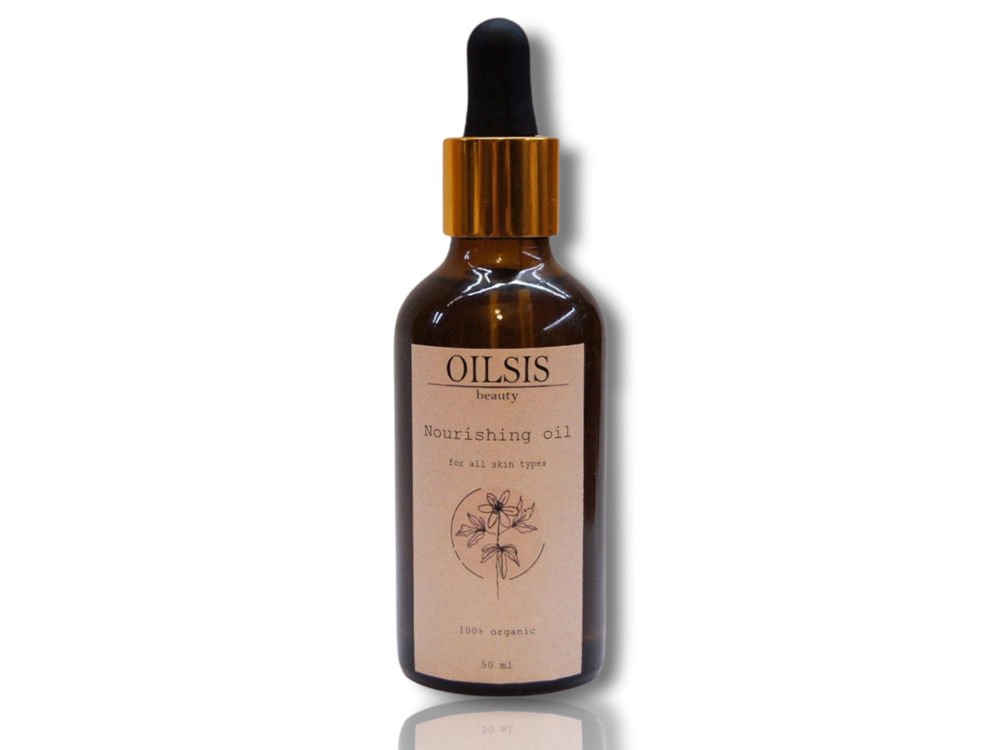
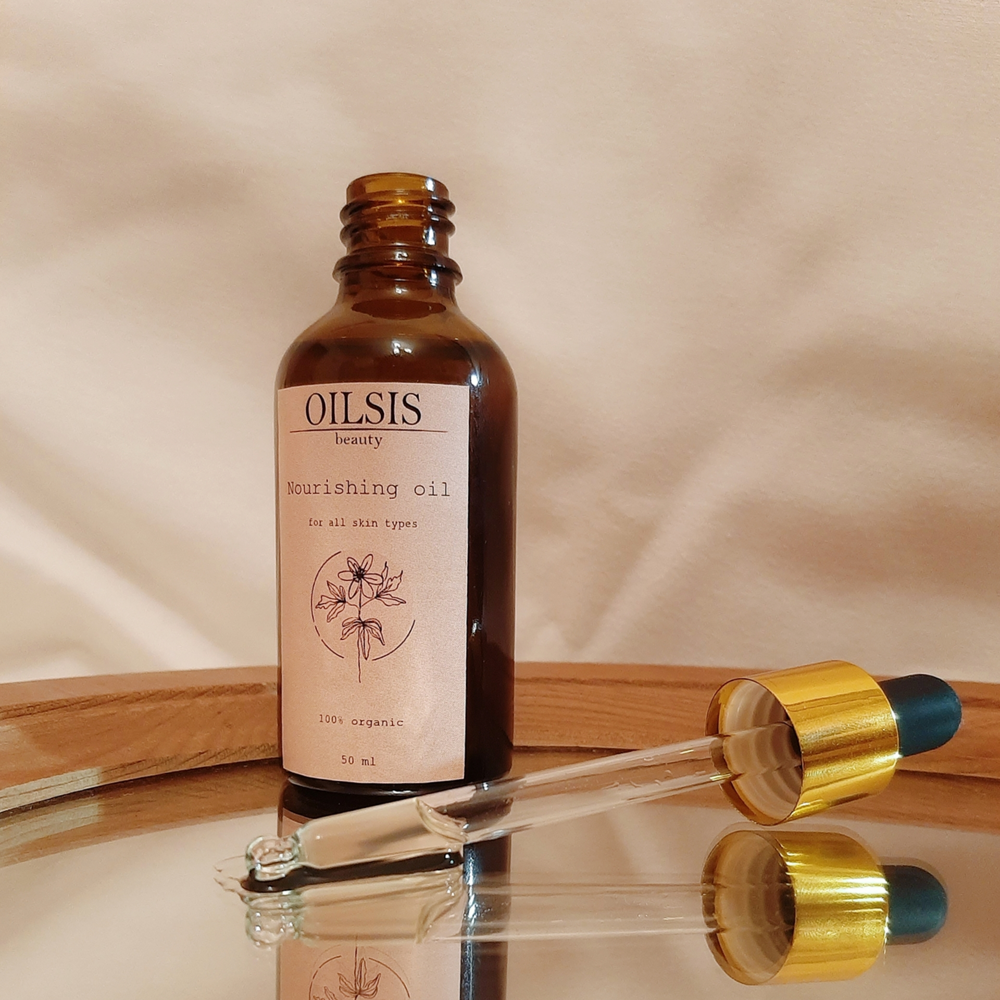
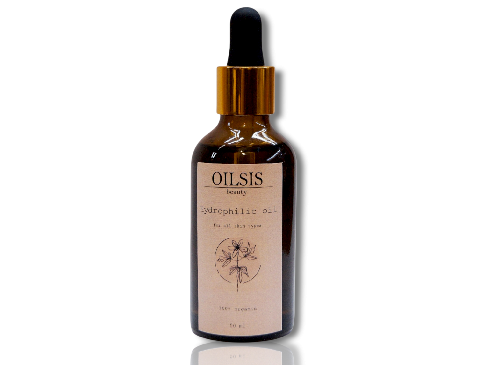
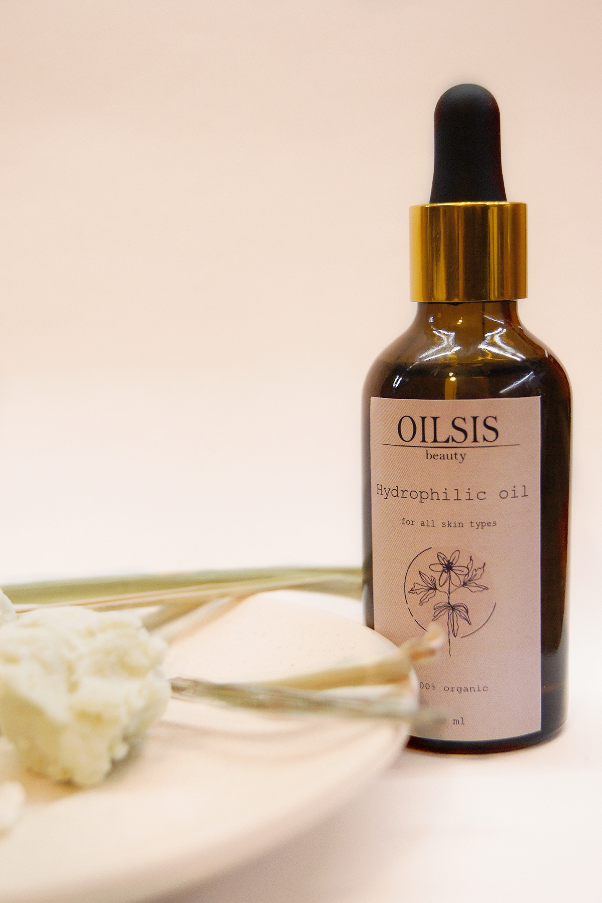

 Питательное масло для лица является отличным помощником в уходе за кожей лица. Входящие в состав масла наполняют кожу полезными компонентами улучшаю ее структуру.
Масло сладкого миндаля содержит витамин Е, который является естественным антиоксидантом, замедляющим старение клеток и устраняющим воспалительные процессы на коже, а также витамин F, который нормализует функцию сальных желез и предупреждает расширение пор.
 Масло Ши на протяжении многих веков используется африканцами для ухода за кожей. Оно прекрасно впитывается, оказывая смягчающее, противовоспалительное и антисептическое действие. Кроме этого масло ши обладает омолаживающим действием, повышает упругость кожи, заживляет мелкие трещинки, способствует синтезу коллагена.
Масляный экстракт ромашки обладает ранозаживляющими свойствами, ускоряет процессы регенерации тканей, снимает раздражения и покраснения. В состав масла входят фитостерины, витамин С, которые предотвращают избыточное выделение кожного себума.
Эфирное масло апельсина сладкого в составе которого D-лимонен - сильнейший антиоксидант, как и витамин C прекрасно отбеливают кожу, избавляют от пигментных пятен, выравнивая цвет лица, выводят токсины, защищают от воздействия окружающей среды. Также входящая в состав аскорбиновая кислота способствует повышению эластичности, а витамины A и B помогают восстановить повреждённые клетки эпителия, устранить воспалительные процессы, признаки усталости и раздражения.
Состав: масло сладкого миндаля, масляный экстракт ромашки, масло виноградной косточки, масло ши, масло семян хлопка, масло авокадо, эфирное масло ванили, эфирное масло апельсина сладкого
Масло Ши может выпадать в осадок при пониженной температуре хранения.
Не использовать в случае индивидуальной непереносимости компонентов.
Объём: 50 мл
Хранение: хранить при температуре +5-25°C в темном сухом месте. Не допускать попадания прямых солнечных лучей и влаги.
Срок годности: 6 месяцев после вскрытия упаковки
Способ применения: встряхните флакон перед применением. Разотрите в ладонях 3-5 капель масла и нанесите прикладывающими движениями на область лица и зону декольте. Распределите масло по массажным линиям в течении 3-5 минут. Дайте маслу впитаться в течении 30 минут, после промокните остатки сухой салфеткой.
Гидрофильное масло является прекрасным средством для очищения кожи лица от косметики, пыли и кожного себума. За счёт своей текстуры масло легко распределяется по лицу и растворяет загрязнения. Наше гидрофильное масло легко смывается теплой водой, оставляю тонкую увлажняющую вуаль.
Касторовое масло, которое выступает основным компонентом масла глубоко проникает в поры вытягивая все загрязнения и сальные пробки. Также касторовое масло отбеливает кожу, помогает осветлить веснушки и пигментные пятна.
 Масло семян хлопка, обладает хорошей проникающей способностью. Масло стимулирует выработку клетками кожи целого комплекса полезных гормоноподобных веществ и белков, что придает коже эластичность и здоровый блеск. Содержит особый набор жирных кислот, который весьма благотворно влияет на кожу человека и восстанавливает ее природный водно-жировой баланс. Способствует образованию клеточных мембран и восстановлению целостности клеток, таким образом, делает кожу бархатистой и атласной.
Эфирное масло ванили обладает отбеливающим и матирующим эффектом, помогает выровнять цвет лица, устраняет жирный блеск.
Эфирное масло мандарина воздействует на лимфатическую систему, увеличивая скорость лимфотока. Регенерирующие и противовоспалительные свойства данного масла помогают эпидермису в быстром избавлении от высыпаний и пигментации.
Состав: касторовое масло, масло авокадо, масло семян хлопка, масло виноградной косточки, твин-80, эфирное масло ванили, эфирное масло мандарина
Объём: 50 мл
Хранение: хранить при температуре +5-25°C в темном сухом месте. Не допускать попадания прямых солнечных лучей и влаги.
Срок годности: 6 месяцев после вскрытия упаковки
Способ применения: встряхните флакон перед применением. Мягкими массажными движениями нанесите 3-5 капель на сухую область лица и зоны декольте. Помассируйте области нанесения в течении 2х минут и смойте теплой водой образовавшееся молочко.